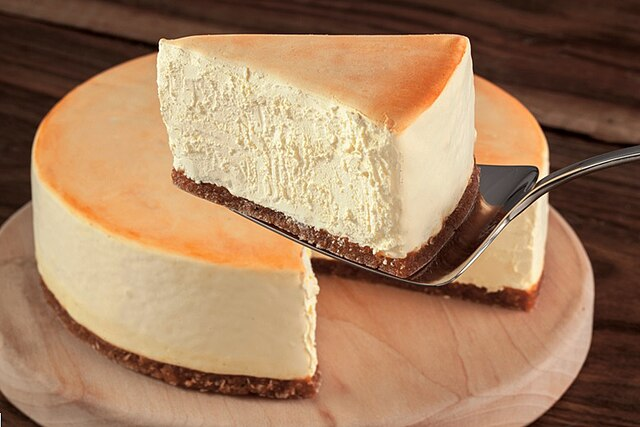

Cheesecake Recipe

Description
Think making cheesecake is difficult? Think again!
This foolproof recipe delivers a cheesecake
that's dense, rich, and creamy—rivaling those from
New York's most beloved delis—and it's simple enough for beginners to master.
Ingredients for cheesecake
- Graham Cracker
- Butter
- Sugar
- Salt
- Cream Cheese
- All-Purpose Flour
- Vanilla Extract
- Lemon Zest And Juice
- Eggs
- Sour Cream
Cooking Instructions
- You’ll need a 9- or 10-inch springform pan and heavy-duty foil. The removable sides make it easy to release the cheesecake, but they often leak. Wrapping the pan in foil prevents water from seeping in during the water bath. Alternatively, place the springform in a larger cake pan to avoid using foil (see how it’s done here) or purchase a silicone wrap for your pan. You will also need an electric mixer for whipping up the batter and a large roasting pan for the water bath.
- Prep the pan and preheat the oven: Set the oven to 375°F. Wrap the springform pan with two layers of heavy-duty foil, covering the bottom and sides. Spray the inside with nonstick cooking spray.
- Make the graham cracker crust: In a medium bowl, combine the graham cracker crumbs, melted butter, sugar, and salt; stir to combine.
- Press the crumbs into an even layer on the bottom of the prepared pan. Bake the crust for 10 minutes, until set.
- Make the cheesecake batter: In the bowl of an electric mixer fitted with the paddle attachment or beaters, combine the cream cheese, sugar, and flour.
- Beat on medium speed until just smooth, about 1 minute, then mix in the vanilla, lemon zest, lemon juice, and salt.
- With the mixer on low, add the eggs, one at a time, mixing until incorporated, scraping the bowl as necessary. Then add the sour cream and mix until the batter is uniform.
- Pour the batter on top of the crust.
- Place the unbaked cheesecake in a large roasting pan and add boiling water to the pan, about an inch up the sides of the springform. This water bath, or bain marie, ensures even, gentle baking and helps prevent cracking or drying. Bake the cheesecake at 325°F until it’s just set; it should not appear liquid, but will slightly wobble when gently nudged, as it will continue to cook as it cools.
- Remove the roasting pan from the oven and cool the cheesecake in the water bath on a wire rack for 45 minutes. Then, remove the springform pan, discard the foil, and refrigerate the cheesecake for at least 8 hours or overnight.
- Slice with a sharp knife, wiping clean between cuts. Serve with berry sauce, if you like. Cheesecake can be made up to two days ahead of time, or frozen for up to 3 months.
Back to Home